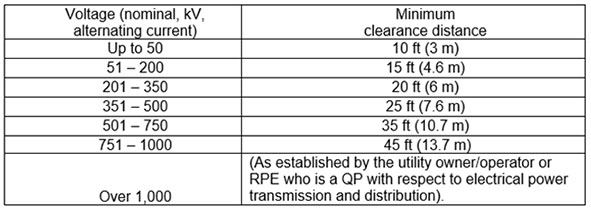
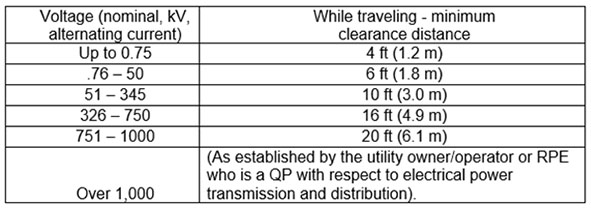

16.G Operation
16.G.11–16.G.14
16.G.11 Power line safety - over 350 kV. The requirements of Sections 16.G.09 and 16.G.10 apply to power lines over 350 kV except:
- For power lines over 350 kV but at or below 1000 kV, wherever the distance "20 feet (6 m)" is specified, the distance "50 feet (15 m)" must be substituted; and,
- For power lines over 1000 kV, the minimum clearance distance must be established by the utility owner/operator or a RPE who is a QP with respect to electrical power transmission and distribution.
16.G.12 Power Line Safety While Traveling Under or Near Power Lines with NO Load. The employer must ensure that;
- The boom/mast and its support system are lowered sufficiently to ensure clearances in Table 16-2 are maintained;
- Effects of speed and terrain on equipment movement (including boom/mast) are considered to ensure clearances in Table 16-2 are maintained;
- If any part of the LHE, while traveling will get closer than 20 ft (6 m) to the power line, a dedicated spotter who is in continuous contact with the operator is used;
- When traveling at night, or in conditions of poor visibility, in addition to the above, the employer must ensure that;
- the power lines are illuminated, or alternate methods are used to identify location of power lines;
- a safe path of travel is identified and used.
16.G.13 Physical clearances.
- Adequate clearance shall be maintained between moving and rotating structures of the LHE and fixed objects to allow the passage of employees without harm. The minimum adequate clearance is 24 in (61 cm).
- Accessible areas within the swing radius of the rear of the LHE's rotating superstructure, either permanently or temporarily mounted, shall be barricaded to prevent an employee from being struck or crushed.
16.G.14 Crane Mats. Where crane mats are required for a stable, level work surface for crane operations, the matting material shall be in good condition and of adequate thickness, width, and length as to completely support the crane. The mats shall be laid perpendicular to the crane travel path, and shall be placed as close to each other as possible. A spotter shall be used to guide the crane when it moves on the mat surface to prevent the crane from traveling beyond the limit of the crane mats.
TABLE 16-1
Minimum Clearance from Energized Overhead Electric Lines

TABLE 16-2
Minimum Clearance Distance from Energized Overhead Electric Lines While Traveling with No Load

Note: Environmental conditions like fog, smoke or precipitation may require increased clearances.
{kind=link}
{kind=link}